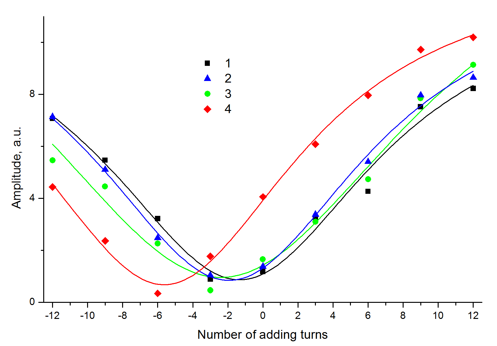

Изначально был намотан неправильно.
17.06.2019 Выявление некоректности количества витков на стенде
настройки:
внешняя емкость - 226 нф;
Частота - 2050 Гц;
Ослабление на генераторе - 40 dB
Дистанция - 1.1 м
при проверке были выявлены лишние 5 витков на боковых катушках
На рисунке четвертая точка соответствует начальному состоянию катушки
19.06.2019 подтверждено наличие лишник 5 витков

по три витка отмотал
05.08.2019
Сегодня промерил ещё раз все катушки
Вот результат:

от первой катушки отмотать по 1 витку с боковых, от второй катушки отмотать по 2 витка с боковых, от третьей катушки отмотать по 3 витка с боковых, а с четвёртой катушки отмотать по 1 витку с боковых.
Схема приспособы, с помощью которой производились измерения:
комбинациями переключателей можно получить следующие дополнительные значения витков: -12, -9, -6, -3, 0, 3, 6, 9, 12.
Замечено, что переключение катушки с 3-мя витками необходимо делать при выключенном переключателе. Иначе возникают глюки, похожие на искрение в контактах и потеря контакта. Природу пока не выяснил...